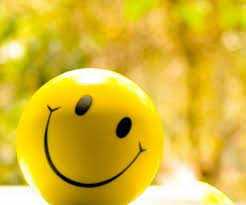

 Позитив — это положительные эмоции, которые связаны с хорошим расположением духа, оптимизмом, жизнерадостностью. Помимо этого, встречаются другие определения, которые связаны не с психологией, а техникой. Так, в фотографии термином позитив обозначают окончательный вариант снимка. Еще известен одноименный музыкальный инструмент, получивший широкое распространение в средневековой Европе.
Позитив, как и его извечный антагонист – негатив, отображает двойственность мира. Есть добро, но есть и зло. Бывают хорошие события, но порой происходят плохие. Также и в отношении человека к самому себе и окружающему миру. Оно может быть положительным или отрицательным. Утверждать, что позитивные мысли единственно верные – нельзя, опять же, из-за дуальности мира. Важна «золотая середина», поскольку чересчур оптимистичный настрой может уводить человека в мир иллюзий, не позволяя ему адекватно оценивать события. Негатив помогает быть более конструктивным, тщательнее оценивать ситуацию, просчитывая все возможные варианты.
Позитивные мысли важны, но они должны быть уравновешены определенной долей скептицизма, иначе человек рискует отнестись к ситуации поверхностно, тем самым упуская важные детали. Это убеждение соответствует синтон-подходу, который вводит своеобразную триаду: позитив, конструктив, ответственность. Отсутствие хотя бы одного из этих компонентов, ставит под риск срыва любое начинание. Безусловно, значение позитива переоценить сложно, но надеяться только на него не стоит. Рассмотрим его сильные и слабые стороны.